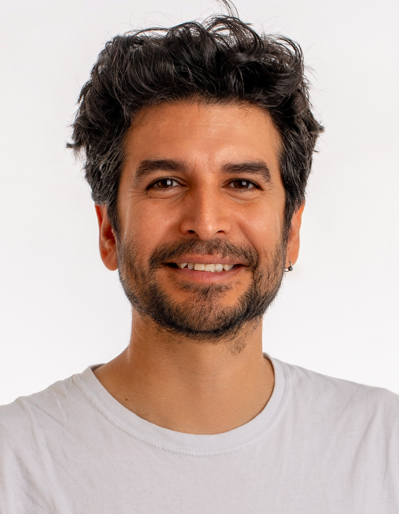

Group Leader, Plant Synthetic Genomics
Heinrich Heine University Düsseldorf · CEPLAS
I lead the Plant Synthetic Genomics group at HHU Düsseldorf and the Cluster of Excellence on Plant Sciences (CEPLAS). My programme develops the genetic and cellular methods required for synthetic plant chromosomes to function in living cells — acquiring telomeres, recruiting centromere activity, replicating and segregating. I use the circadian clock as a quantitative test system to ask whether a complex gene regulatory network can be reconstructed on a synthetic neochromosome in Physcomitrium patens.

My research establishes plant synthetic genomics as a constructive discipline. We build not only large synthetic DNA molecules, but the biological programmes required for synthetic plant chromosomes to boot up inside living cells. The central biological question is whether complex gene regulatory networks depend on genomic context, tested through the relocation of the plant circadian clock to a synthetic neochromosome.
Designing, assembling and booting up synthetic chromosomes in Physcomitrium patens. We develop methods for telomere seeding, neocentromere activation, and heritable chromosome maintenance using optogenetic control and liquid–liquid phase separation.
Testing whether the plant circadian clock — a complex gene regulatory network scattered across the genome — can be modularised and reconstructed on a synthetic neochromosome. This is the highest-risk, highest-reward component of the programme.
RepTiles-guided DNA design, Golden Braid assembly, and transformation-associated recombination for scalable synthetic genomics. Building the instruction set for chromosome activation from modular parts.
Light-controlled gene expression and multiplexed genome editing in plants. Integrating optogenetic systems with synthetic chromosome platforms for programmable control of biological functions.
Full list on Google Scholar
Key collaborators: Dr André Marques (MPI Plant Breeding Research / CEPLAS) · Prof Björn Usadel (FZ Jülich / HHU / CEPLAS) · Prof Matias Zurbriggen (HHU)
I teach an MSc course M2209 in Synthetic Biology and Biotechology at Heinrich Heine University Düsseldorf. I have supervised 22 BSc and MSc theses spanning circadian biology, optogenetics, DNA assembly and chromosome engineering. I have also hosted more than 10 PhD, MSc and BSc internships and lab visits, and serve on a PhD thesis advisory committee.
A central aim of the programme is to train a new generation of plant synthetic genomics researchers in Germany — students with hands-on experience in chromosome engineering, quantitative biology and biodesign automation.
I trained at the National Autonomous University of Mexico (UNAM) in the Genomic Sciences programme, where I participated in iGEM and won a travel grant for an oral presentation at the Synthetic Biology Conference at Stanford University. I completed my MSc and PhD at the University of Edinburgh on competitive international scholarships, working on quantitative models of the plant circadian clock with Andrew Millar at SynthSys.
Since 2023, I have led the Plant Synthetic Genomics group at HHU Düsseldorf, embedded in the Cluster of Excellence on Plant Sciences (CEPLAS) and the Institute of Synthetic Biology. The programme has been built through a deliberate escalation of competitive support — from CEPLAS seed funding, through the HHU Strategic Research Fund, to international competitive funding from the John Templeton Foundation — and is now preparing a European Research Council Starting Grant application for the 2027 call.
Plant Synthetic Genomics as a named research programme in Europe can be traced to this group. The CEPLAS Seed Fund, awarded on 25 November 2022, is the earliest documented institutional use of the term "Plant Synthetic Genomics" as a funded programme — predating the UK ARIA Synthetic Plants programme (£62.4M) by 22 months. The following pages document this record with primary sources.
A factual chronological account of when, where, and by whom Plant Synthetic Genomics was established in Europe — documented with verifiable primary sources before ARIA emerged.
Read the record →
Primary source documents: the CEPLAS seed fund application (Nov 2022), JTF grant correspondence, HHU Rektorat letters, VW Stiftung application, and the Jiao/Dai email exchange (Jan 2024).
View evidence →
Talks, student theses (16 supervised, 2021–2025), conference presentations, and community engagement activities constituting the field-building record of the programme.
View activities →
Founding date of Plant Synthetic Genomics as an institutionally recognised, funded research programme in Europe — 22 months before ARIA opened its Synthetic Plants call.
HHU Düsseldorf · CEPLAS